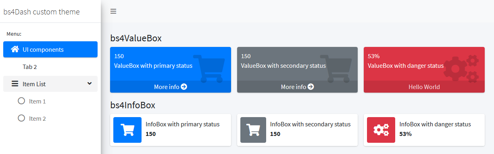
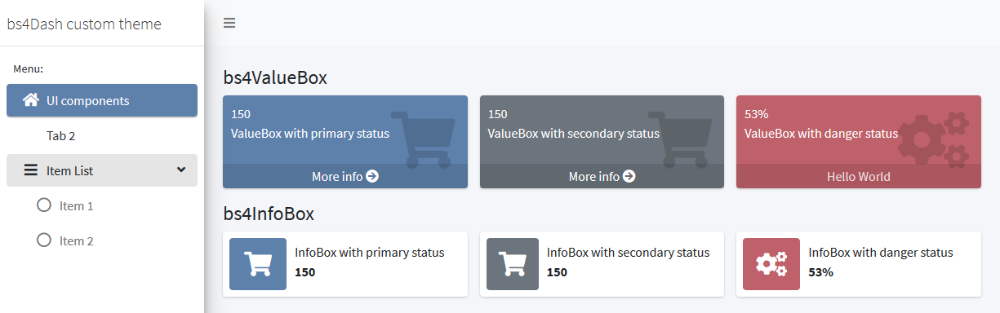

Main statuses
Main colors of {bs4Dash} are defined in 6 status, you can use those status in infoBox, valueBox, cards, … The primary color () is also used to highlight active elements, so it’s present everywhere. Below is an example by changing the color of the “primary” and “danger” statuses:
bs4dash_status(primary = "#5E81AC", danger = "#BF616A")
With classic statuses from {bs4Dash}, it look like:

With our new theme, we have changed the color of boxes and active element in sidebar:
